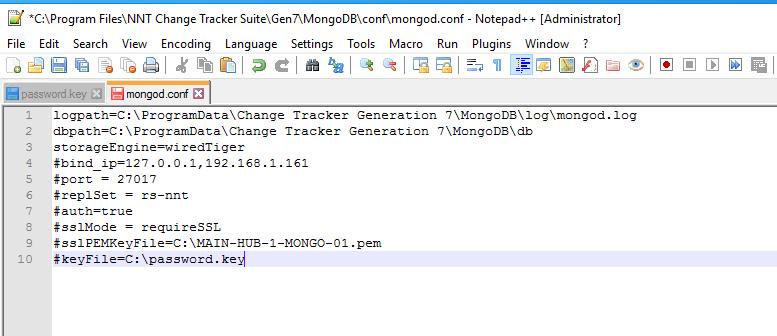
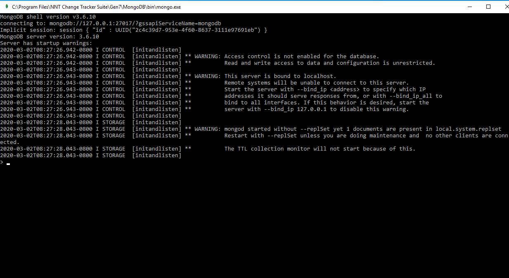
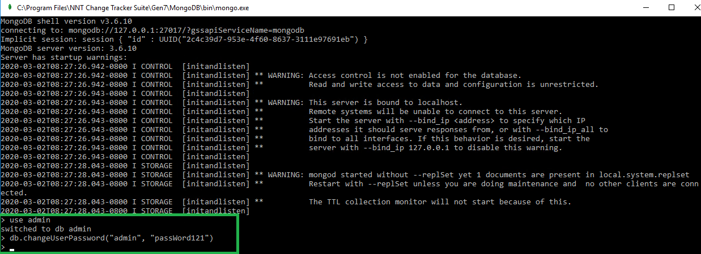
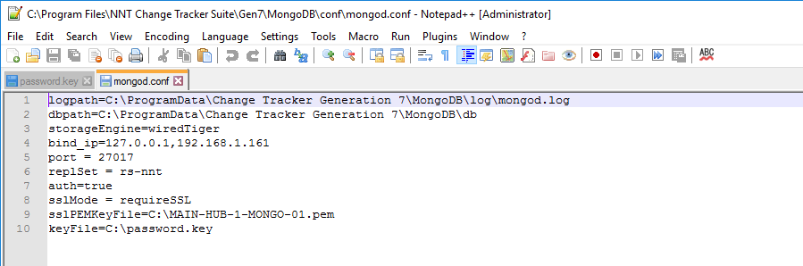

Question
I have authentication enabled in my Mongo DB, but I've lost the admin password to access. How can I reset it?Answer
Here are instructions for how to change the admin account password.IMPORTANT. It requires logon to the server that has the Mongo Database installed.
Step 1. Stop the MongoDB Service in Task Manager
Step 2. Disable MongoDB Authentication:
-
Navigate to
C:\Program Files\NNT Change Tracker Suite\Gen7\MongoDB\conf - Edit the mongo.conf file
-
Comment each line out using the # symbol except for logpath,
dbpath and storageEngine:

Step 4. Open the Mongo shell by running the following program:
C:\Program Files\NNT Change Tracker Suite\Gen7\MongoDB\bin\mongo.exeYou will see the following window:

Step 5. Enter the following commands:
use adminStep 6. Enter one more command:
db.changeUserPassword("admin", "passWord121")
NOTE. The command above uses passWord121 as an example password, be sure to modify this to a password you wish to use
Changing the password should take you to a new line without an output:

Step 8. Re-enable MongoDB Authentication:
-
Navigate to
C:\Program Files\NNT Change Tracker Suite\Gen7\MongoDB\conf -
In the mongo.conf file remove all # symbols from each of the lines. Save changes:

Step 10. Open Command prompt and verify your Mongo logon using your authentication command. Below is an example:
"C:\Program Files\NNT Change Tracker Suite\Gen7\MongoDB\bin\mongo" --ssl --sslCAFile C:\mongo.crt --host 192.168.1.X --port 27017 -u admin -p passWord121 --authenticationDatabase admin --sslAllowInvalidCertificates
NOTE. Parameters highlighted with blue have to reflect the IP of the server hosting the MongoDB and the new password entered in a command above.